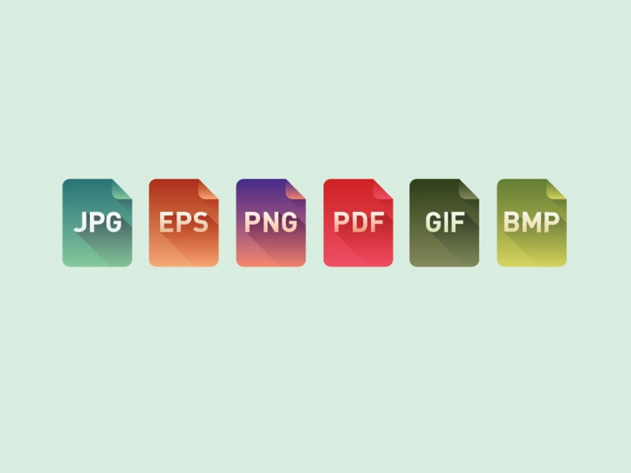

Cameron's website
2.7-Appropriate filetypes for websites
Appropriate filetypes for websites consist of:
AVI - Audio/video (standard format supported on windows)
CSS - Cascading stylesheet (takes care of how websites look)
DOC - Microsoft Word document (you won’t come across this much)
EXE - Executable file (if you download a program that you need to install)
GIF - Graphics interchange format (the most common image format on the internet)
HTML - Hypertext markup language file (most pages you create for a website will be HMTL files)
JPEG - Joint photographic experts group file (another common image file format, mainly used for photos)
MIDI - Musical instrument digital interface (music files made on keyboards, usually really small and often sound great)
MP3 - Layer 3 sound file (this is a sound format which is highly compressed, which allows download-happy file sizes and excellent quality)

2.8-Are you happy with the IT tools you used?
Yes, I feel the tools I have used have worked well together, there can be complications sometimes with applications conflicting each other but if you realise your mistakes then you can correct them. All the applications are easy to use and have very good instructions on how to use them if you are starting new.
VS code is a good application as you can run multiple types of code together and run it to ensure they run, also the structure of the program is easy for anybody to understand.